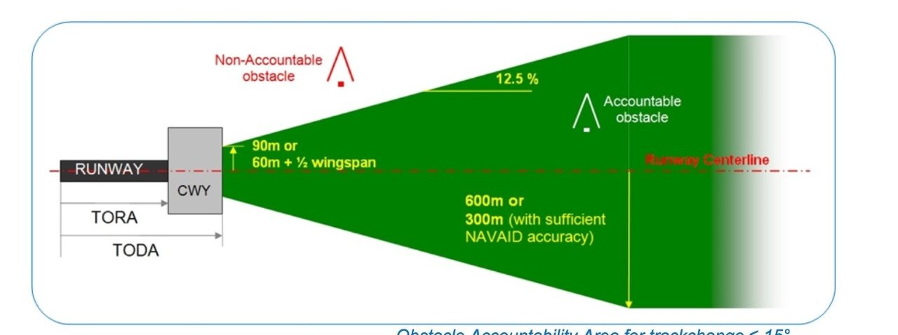
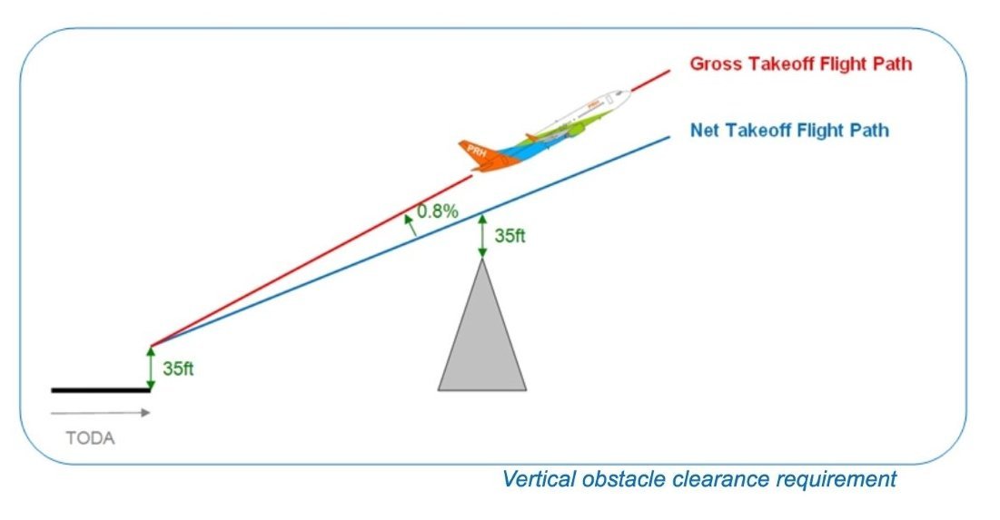
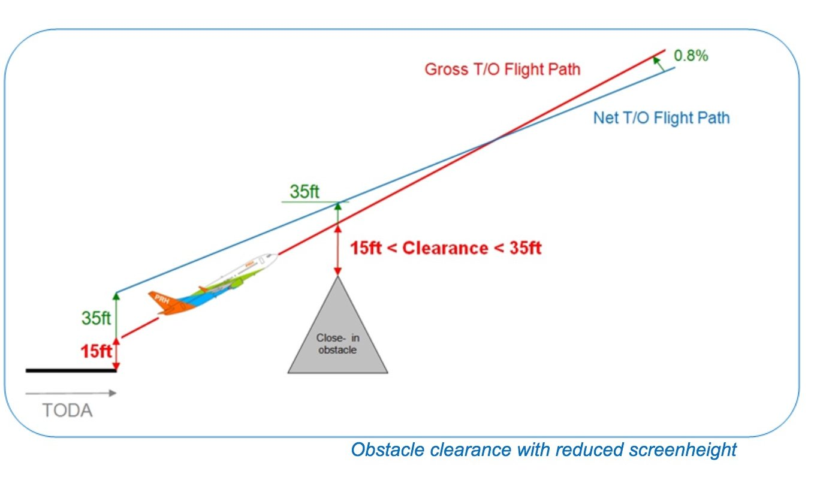
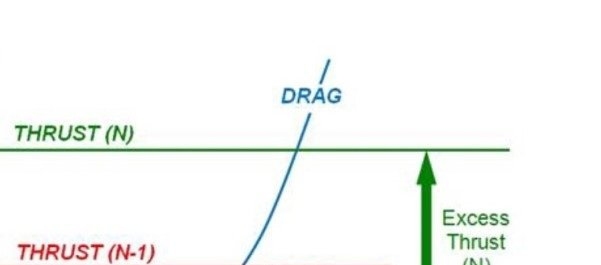

Lesson 05: Obstacles, Tyre Speed, Brake Energy and Flap Selection
Lesson 5 of 10 · about 10 min
Learning objectives
Apply the net take-off flight path and obstacle clearance rules.
Explain the engine failure procedure (SID deviation and restriction points).
Explain the tyre speed and brake energy limits and how the take-off flap setting changes each limit.
The net path must clear every obstacle.
Obstacle accountability area
Every obstacle inside the obstacle accountability area (departure sector) must be cleared with one engine inoperative until the aeroplane reaches 1,500 ft net height. CAT.POL.A.210 sets the lateral limits: a semi-width of 90 m + 0.125 D (60 m + half the wingspan for small wingspans), up to 300 m with sufficient navigation accuracy or 600 m otherwise for track changes up to 15°, and wider (600 m / 900 m) for larger track changes.

Obstacle accountability area for track changes up to 15°. Source: Domestic Airlines B737-800 NG performance course.
Net flight path
The gross flight path is what an average aeroplane achieves with one engine out. The net flight path is the gross gradient reduced by 0.8 % for a twin, to cover pilot technique and fleet variation. The net path must clear every obstacle by at least 35 ft, or 50 ft when the bank angle exceeds 15°. The most penalising obstacle gives the obstacle limit weight.

Vertical obstacle clearance: the net take-off flight path clears obstacles by at least 35 ft. Source: Domestic Airlines B737-800 NG performance course.

Wet or contaminated runway: the gross path starts at 15 ft, so a close-in obstacle may be cleared by between 15 and 35 ft (AMC1 CAT.POL.A.210). Source: Domestic Airlines B737-800 NG performance course.
Engine failure procedures
Where obstacles would make the straight-out limit too restrictive, the company publishes an engine failure procedure (emergency turn). PANS-OPS makes this the operator's responsibility. Two points may be defined on a SID: the SID deviation point, where the engine-out route leaves the SID, and the SID restriction point, after which the SID itself can be followed safely with one engine inoperative.
Remember
A SID climb gradient (standard 3.3 %) is an all-engines gradient: meeting it does not prove one-engine-inoperative obstacle clearance.

Excess thrust with both engines is about four times the one-engine excess thrust: the height gained before a failure matters. Source: Domestic Airlines B737-800 NG performance course.
Tyre speed and brake energy
The tyre speed limit weight is the weight whose lift-off ground speed equals the certified tyre speed (B737: 225 mph / 195 kt). It can limit at hot and high airports or with improved climb. More flap or less weight lowers VLOF. Rotate at the normal rate — a slow rotation raises the actual lift-off speed.
VMBE is the highest V1 from which the brakes can absorb the energy of a stop. It is demonstrated with 90 % worn brakes, no reverse thrust and residual heat equal to 3 taxi miles and 3 stops; a safe evacuation must remain possible for 5 minutes after the stop. If V1 exceeds VMBE, reduce the weight or unbalance V1.
Choosing the take-off flap
More flap creates more lift and more drag: shorter take-off distance and higher field limit weight, more tail clearance — but a lower climb limit and obstacle limit weight. Field-limited: choose more flap. Climb- or obstacle-limited: choose less flap. The performance tool normally optimises the flap setting.
Key takeaways
Net path = gross − 0.8 % (twin); clearance ≥ 35 ft, ≥ 50 ft if bank > 15°.
Meeting a SID gradient does not guarantee engine-out obstacle clearance.
Tyre speed limits VLOF; VMBE limits V1.
Field-limited → more flap; climb- or obstacle-limited → less flap.
Knowledge check
The take-off is obstacle-limited. Which flap change usually helps?
More flap
Less flap
Flap has no effect
Flaps up
Answer: B. Less flap reduces drag and improves the climb gradient — provided the field length allows it.
Training material only. It does not replace the Aircraft Flight Manual, FCOM, QRH, MEL or the Domestic Airlines Operations Manual, which always take precedence.